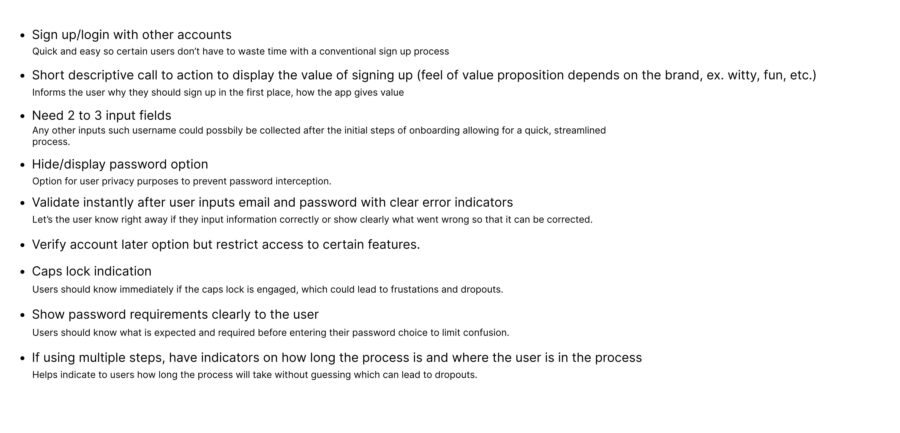
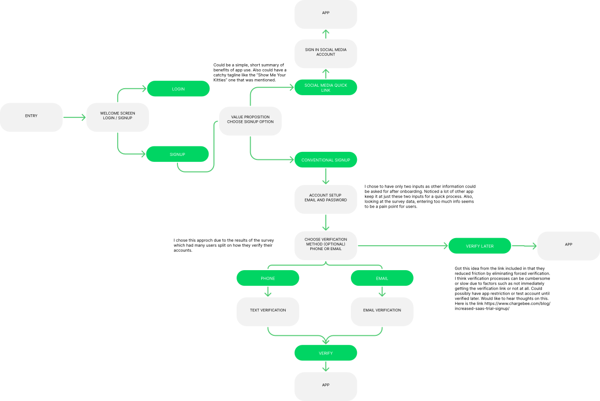

Designing a fast, efficient sign-up process.
During the Summer Cohort for Code Louisville Program in 2022, my team was faced with a challenge for Cat-tastic, a fictitious social media app for cat enthusiasts to create and share cat-related content. Despite being downloaded by users, the sign-up process was not being completed. We were given three weeks to find a solution to this problem.
Team
Collaborative:
- Competitive Analysis
- User Research
- Empathy Mapping
- Personas
Individual:
- Userflow
- Wireframe
- Prototype (Low-Fidelity, Hign-Fidelity)
The Problem
Many users are beginning the sign-up process on the Cat-tastic app, however, only 30% are successfully completing it. This presents a problem for both the users, as it indicates there is friction and frustration in the sign-up process, and the business, as users are potential content creators and ambassadors for growing a thriving social media community. The company cannot afford to lose a significant number of users in a competitive market for social media share.
Who
Millennials, Gen Z
Younger generations, such as Gen Z and Millennials, generally share a common sentiment that they don't like to reveal too much personal information. They also find that many sign-up forms take too much time and can be cumbersome.
Scope and Constraints
2022 (3 weeks)
Remote Team of 4 Members
The first challenge was that the stakeholder brief indicated that only 30% of users were completing the sign-up process, but it did not provide any previous screens for analysis. This made it difficult to find a solution as we had to solely rely on best practices for sign-ups instead of the previous app's sign-up process. Our program mentors acted as our stakeholders.
The second challenge was time constraints, as we had limited time to conduct user research and gather qualitative data. Additionally, there was not enough time to obtain significant validation data.
Discovery: Let's Look at the Competition
After defining the problem statement to align the team, we started by studying the sign-up processes of other competitive social media apps. By examining their app screens, we noticed that the majority of these apps offered social media sign-up buttons for a quick and easy sign-up experience.
On the other hand, when these apps did not have social media sign-up buttons, they had no more than a few pages with minimal input fields and incorporated a strong password indicator for data protection. They also offered options for verification. To add, we turned to well-respected UX organizations such as NNG to study best practices for sign-ups.
How do our users feel about sign-ups?
Due to limited time, we used quantitative data from a survey to gather the information we needed from users. The data revealed the most significant issues with the sign-up process were that it was often too lengthy, required too much information, and had too many steps involved. The main goal for users when signing up for a social media app was to quickly start creating, viewing, and sharing content.
Meet Katherine
"I like cats more than I like people. 😄"
Due to time constraints, we created a proto-persona to represent our target user based on the insights gathered from the discovery phase. This proto-persona served as a basis for creating an empathy map and for making design decisions moving forward.
Empathy Map

Having developed our persona, we moved on to creating an empathy map to gain deeper insights into the behaviors and attitudes of our target user when using our product. This helped us to understand their needs, goals, pain points, and motivations in a more comprehensive manner. By creating an empathy map, we were able to put ourselves in our user's shoes and design a more user-centered solution that addresses their specific needs and challenges.
How can we solve this problem?
Utilizing all of our insights gathered during the discovery phase, we generated some general concepts for our signup process and the reasoning behind them. Here is the list I compiled:
Going with the flow
Next, in order to arrive at a shared understanding for all team members on the design, we each took the ideas from the previous stage and created our own user flows. Afterward, we compared the results. The user flow I created is shown above, with my wireframe below.

Did our process work?
As previously mentioned, the team was facing a tight deadline, leaving little room for thorough testing. Despite the time constraint, I still took the time to show the screens to individuals within our target user age group. The wireframe I designed received positive feedback and I also created an interactive prototype, complete with a clickable link at the bottom. While I am aware that there are opportunities for improvement, I hope to conduct more testing in the future to better understand a critical process for most apps.
Now, let's slap some paint on it
After creating the wireframe and little testing, I set out to design my own user interface. I wanted to ensure that the design was familiar to potential users and followed the common signup process of other popular social media apps. I took into consideration the initial feedback received from users and used my wireframe as a guide throughout the design process. I made sure to keep detailed design rational notes throughout the process. The final result is showcased below.

- Obvious sign up button for new users
- Quick, simple flow with little distractions
- Obvious page titles to let the user know what their doing and what is expected.
- Friendly, cheerful, warm gradient synonymous with what a fun, quirky vibe a social media platform would want to project.
- Password requirement section to help guide user to creating secure, effective password
- Social media logins as the first option front and center as most users according to the research data utilize these elements the most for sign ups.
- Ability to hide and display password for security and in order to help the user see what they typed to confirm password choice
- According to the survey research, a large percentage chose both email and phone for account verification they prefer which led me to include both options for which ever is easiest for the user
- Verify later as an option that would have to be discussed more extensively from a business standpoint. For the user it eliminates friction in the sign up process
Reflections
After the completion of the project, I reflect on the process and identify areas of improvement for future projects. One aspect that I wish I could have done differently is to gather more information from the stakeholders regarding the previous sign-up process. Having a deeper understanding of the root cause of the high abandonment rate would have greatly impacted our solution. However, despite this limitation, my team and I were still able to effectively address the issue and deliver strong results. As I continue to grow in my role, I will make sure to keep this learning experience in mind for future projects. Overall, I am grateful for the opportunity to work on this project and for your attention to my work.